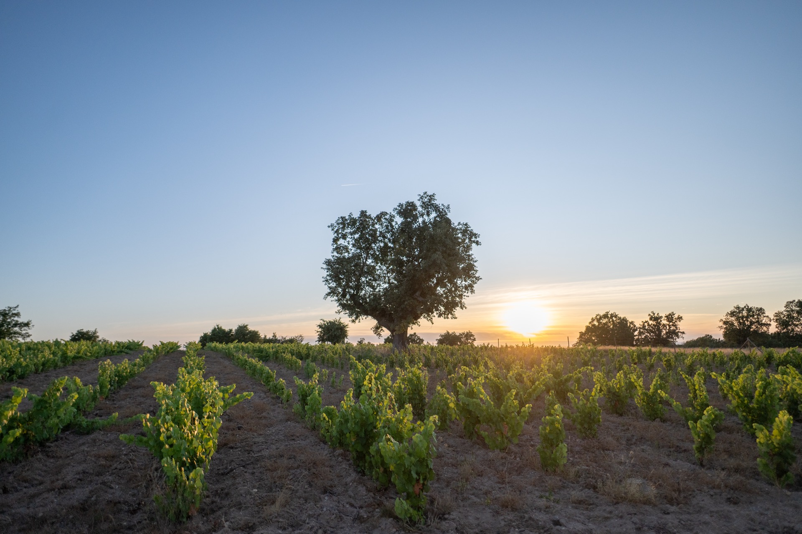
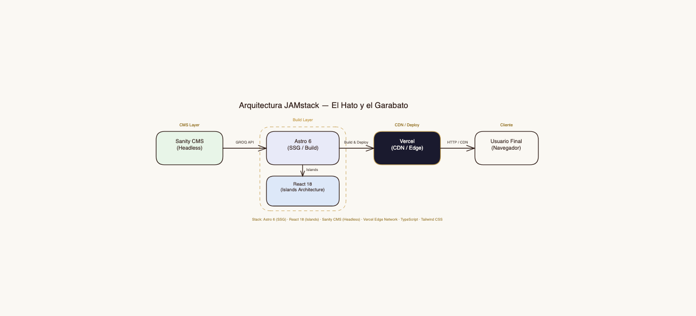
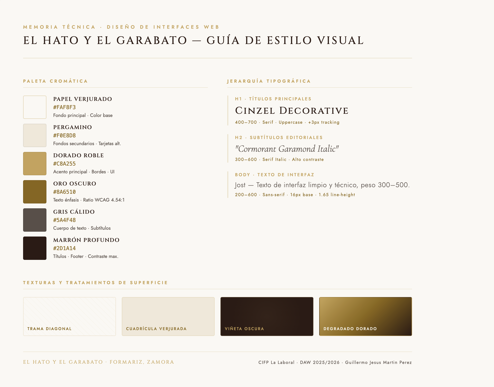
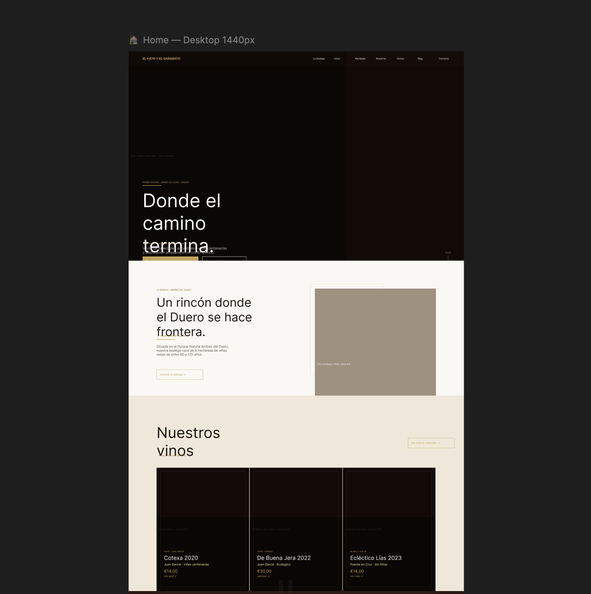
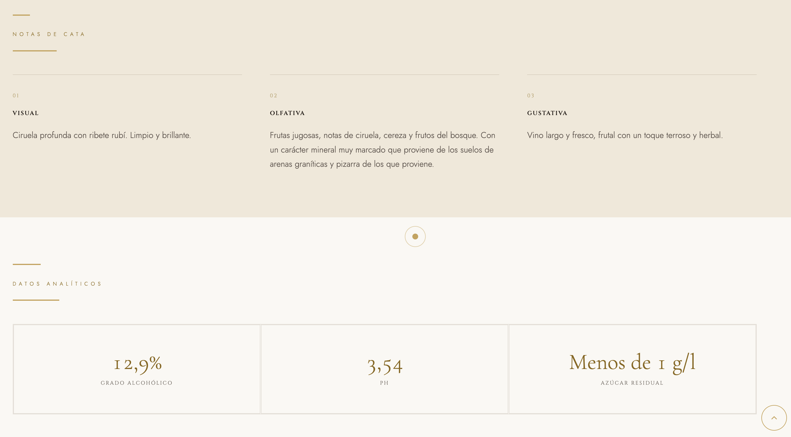

El Hato y el Garabato
Memoria Técnica - Diseño de Interfaces Web
Autor: Guillermo Jesus Martin Perez
CIFP La Laboral · Gijón, Asturias · 2025/2026
"Donde el camino termina"
Pequeña bodega familiar ecológica en Formariz (Zamora), dentro del Parque Natural Arribes del Duero. Recuperamos el patrimonio vitícola inmaterial de una de las DO más pequeñas y exclusivas de España.
- Viñedo de Excepción: 8 ha de viñedo viejo plantado en vaso, con edades comprendidas entre 80 y 120 años.
- Suelos Singulares: Parcelas dispersas sobre arenas graníticas, esquistos y pizarra.
- Variedades Ancestrales: Especializados en uvas endémicas de Arribes (Juan García, Bruñal, Puesta en Cruz).

[Añadir Foto: Viñedos en Arribes]Consumidor Final
Amantes del vino exclusivo de carácter artesanal. Valoran la autenticidad, la ecología y demandan un relato de marca honesto e intuitivo en el sitio web.
Sector Profesional
Distribuidores, importadores y sumilleres (Horeca) que exigen inmediatez analítica: descargas rápidas de fichas de cata y dosieres técnicos.
Turista Enológico
Viajeros de lujo atraídos por el paisaje de los cañones del Duero. Demandan canales sencillos para reservar visitas inmersivas directas.
Justificación del Stack Desacoplado
Migramos del modelo monolítico convencional a una arquitectura de alto rendimiento para asegurar tiempos de carga ínfimos y máxima seguridad:
- Astro 6 (SSG): Compila el sitio a HTML estático puro, maximizando los indicadores Core Web Vitals (LCP < 1.2s).
- React 18.3: Gestiona de forma aislada la interactividad del cliente aplicando el patrón Islands Architecture de Astro.
- Sanity CMS (Headless): Servidor de datos desacoplado para que el equipo gestione contenidos en tiempo real sin requerir conocimientos técnicos.

[Representación de Arquitectura JAMstack]Identidad Cromática Organizada
Crema
Dorado
Marrón
Jerarquía Tipográfica Premium
CINZEL & Cormorant Garamond
Jost & Montserrat (Fuentes Sans-serif para el cuerpo técnico)

[Muestrario de Texturas Verjuradas]De Baja Fidelidad al Prototipo Interactivo
Figma fue la herramienta vertebral elegida para el prototipado al habilitar un flujo de trabajo atómico robusto:
- Auto Layout: Modelado de componentes responsivos que escalan automáticamente entre breakpoints móviles y de escritorio.
- Componentes Atómicos: Garantía de consistencia visual en botones, sliders y formularios.
- Pruebas en Fase de Diseño: Integración de plugins de accesibilidad cromática directamente en el canvas de Figma.

[Añadir Foto: Captura de Figma]| Vino de Autor | Variedad de Uva | Año | Crianza & Reconocimientos |
|---|---|---|---|
| Cotexa | Juan García | 2020 | Crianza de 7 meses en barrica de roble francés. Intenso y calizo. |
| De Buena Jera | Bruñal | 2022 | Crianza de 12 meses. Tinto ecológico con excelente frescor y carácter. |
| Ecléctico Lías | Puesta en Cruz (Blanco) | 2023 | Fermentación en barrica usada y crianza sobre lías sin filtrar. |
| Ecléctico Barrica | Puesta en Cruz (Blanco) | 2023 | Roble francés de segundo uso. 94 pts James Suckling (Top 100 Value). |
| Sin Blanca | Tinto de Guarda | 2018 | Suelo arcilloso, elaborado con uvas de viñas centenarias de alta gama. |
* Catálogo completado con las referencias exclusivas de autor: Otro Cuento y Li.

[Añadir Foto: Ficha técnica del vino]Experiencia de Usuario Envolvente
La interactividad respeta la sobriedad editorial de lujo, acompañando al usuario mediante transiciones naturales:
- Lenis Smooth Scroll: Navegación inercial de alta fidelidad que fomenta la lectura pausada.
- Framer Motion: Animaciones controladas de entrada y revelado de botellas al hacer scroll vertical.
- Cursor Personalizado: Punto y anillo dorado que se expanden al pasar sobre enlaces, desactivándose en pantallas táctiles de manera responsive.
Corrección Rigurosa de la Interfaz
Evaluamos los contrastes de color, semántica y navegación utilizando análisis manuales y la suite automatizada WAVE:
- Contraste de Texto: Ajustamos el color `--text-3` a #706860 para garantizar un ratio de contraste de 4.54:1 sobre fondo claro, superando el estándar AA.
- Operabilidad por Teclado: Lógica de Focus Trap y accesibilidad completa con teclas Tab/Enter/Esc en ventanas emergentes.
- Etiquetado Semántico: Atributos ARIA en botones interactivos y textos alternativos descriptivos obligatorios definidos en Sanity.
Mundo Real
Uso de lenguaje vinícola cercano pero comprensible, integrado con el mapa interactivo de Leaflet.js para situar geográficamente la bodega.
Prevención de Errores
Validaciones inmediatas de formularios de contacto y controles de edad (Age Gate) mediante almacenamiento de sesión de usuario.
Diseño Estético
Eliminación absoluta de elementos que no aporten valor (banners invasivos o exceso de texto) para priorizar el catálogo de botellas.
| Fase del Proyecto | Detalle de Entregables | Presupuesto (Sin IVA) |
|---|---|---|
| Consultoría, UX/UI & Figma | Estudios de usuarios, wireframes de baja/alta fidelidad y guía de estilos. | 3.760,00 € |
| Desarrollo de Software Frontend | Maquetación en Astro 6, integraciones animadas de React e i18n bilingüe. | 4.680,00 € |
| Integración CMS & Backend | Estructuración de datos en Sanity y API GROQ para gestión autónoma. | 1.960,00 € |
| Accesibilidad (QA) & Usabilidad | Auditoría WCAG 2.1 AA, pruebas de compatibilidad y tests heurísticos. | 1.540,00 € |
| Presupuesto Base Imponible | Total ejecución de obra. | 11.940,00 € |
| TOTAL CON IVA (21%) | Incluye infraestructura de servidores anual (506,99 €). | 15.060,86 € |
"Simbiosis de tierra y píxeles"
El proyecto demuestra que la viticultura artesanal y el desarrollo web moderno pueden convivir en perfecta armonía mediante una web rápida, segura y accesible.
"Donde el camino de asfalto termina, se abre paso la huella que perdura en la memoria digital."
Acceso al Código Fuente:
github.com/Marsdix/El-Hato-y-el-Garabato [Añadir Foto: Equipo de la bodega]
[Añadir Foto: Equipo de la bodega]